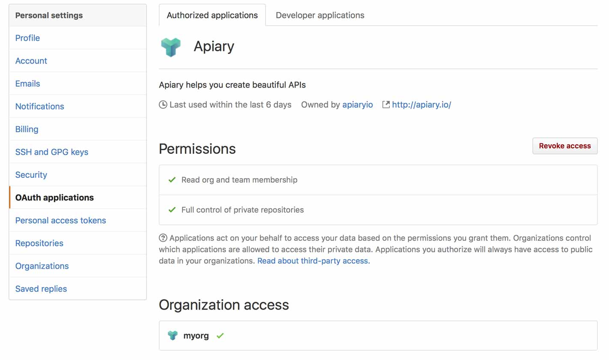
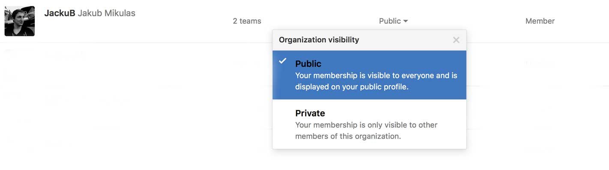
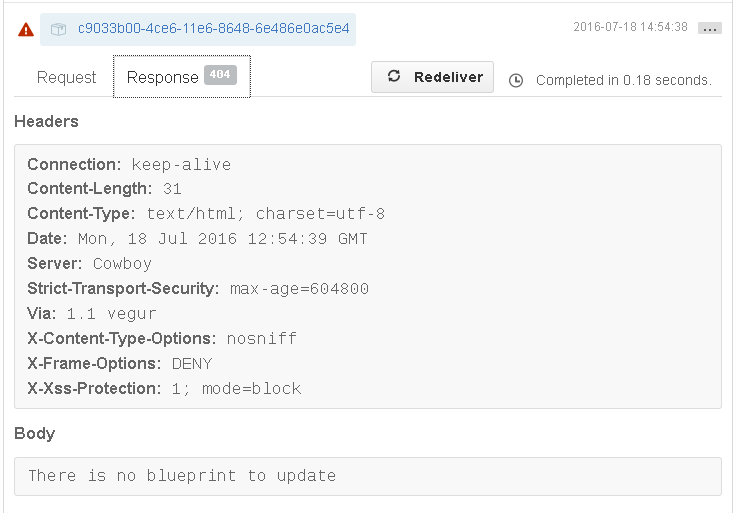

Troubleshooting GitHub Sync and Integration
Here you can find solution to some known issues with GitHub Sync and GitHub Integration.
Check connection with GitHub account
When you run into issues a great place to start is to go to your account settings page and look under “apiary.io and GitHub Account.” There, you can click the button to “Check connection with GitHub” to make sure Apiary has all of the permissions it needs to access your account. In case you change your GitHub username, you need to change it in account settings accordingly.
Connecting repository without admin rights
Very common problem is trying to setup GitHub synchronization with incorrect GitHub user account. GitHub account connected to Apiary must be admin of repo you are connecting to. Otherwise we cannot setup hooks that listen for changes.
Connecting empty repository
GitHub repository cannot be empty when connecting to Apiary. You must initialize repository with at least 1 file before connecting to Apiary.
I don’t see my recently created repository in Apiary
If you don’t see a repository in repository list on the Settings page, it may be because the list hasn’t been refreshed in a while. Click the “Refresh repositories” button to update the list.
Another possibility is that you are trying to connect private repository after allowing Apiary to access only your public repositories. In this case, go to account settings and reconnect your GitHub account with Apiary.
Connecting organization repository
Allowing Apiary app to read your organizations
In GitHub OAuth applications settings you should see the Apiary.io application. Permissions listed should include:
- Read org and team membership
- Full control of private repositories
Under Permissions you should see list of organizations you belong to with indicators whether Apiary.io can access these organizations.
You can try revoking Apiary.io application and trying to connect again.

Organization member visibility
We’ve also encountered issues when user was a hidden member of the organization. Try changing your membership to Public in the organization settings.

API Description Document is too big
If your file is over 1MB, you might’ve hit GitHub API limit. Take a look at guide on working with big files in Apiary for common problems and recommended solutions.
API Description Document on GitHub is not a valid document
When you update your API Description Document on GitHub, we will be notified by GitHub hook and download that file. We will then try to parse your updated document and save it to Apiary. However, if we detect invalid syntax, file won’t be updated. Make sure that file you are pushing to GitHub is valid. We have tools that can help you with that:
- for API Blueprint users we have syntax highlighters for Sublime Text, Vim, Atom and Visual Studio Code
- Apiary CLI can help you preview your changes locally, before pushing them to Apiary or GitHub
- if you are not sure about correct syntax, use Apiary Editor with instant feedback
API Description Document is not updated on Apiary after updating on GitHub
If we failed to fetch or process API Description Document after receiving GitHub hook, we try to add comment to GitHub commit in which document was changed.
You can find additional debug info at GitHub (https://github.com/[username]/[repository]/settings/hooks) Recent Deliveries tab in the particular hook settings.

GitHub protected branches are turned on
When you enable GitHub Protected Branch, checks can prevent Apiary to push API Document to that branch. Solution to required checks is to create Pull Requests from a different branch, which is possible with GitHub Integration.
Have you tried turning it off and on again?
It might be a good idea to reconnect Apiary to GitHub. First, disconnect your GitHub repo from Apiary and then connect it again. This fixes most issues after renaming repositories, organizations or changing your GitHub username.